Tests for checking Batch Effects
| Batch 1 | Batch 2 | Batch 3 | Batch 4 | Batch 5 | Batch 6 | Batch 7 | Batch 8 | |
|---|---|---|---|---|---|---|---|---|
| Condition NegativeNegativeNegative | 0 | 2 | 5 | 2 | 3 | 3 | 4 | 3 |
| Condition NegativeNegativePositive | 1 | 0 | 3 | 4 | 0 | 1 | 0 | 0 |
| Condition NegativePositiveNegative | 2 | 2 | 4 | 2 | 2 | 0 | 1 | 0 |
| Condition NegativePositivePositive | 0 | 0 | 1 | 0 | 1 | 1 | 0 | 1 |
| Condition PositiveNegativeNegative | 0 | 0 | 0 | 0 | 2 | 0 | 0 | 0 |
| Condition PositiveNegativePositive | 0 | 0 | 1 | 1 | 0 | 0 | 0 | 0 |
| Condition PositivePositiveNegative | 7 | 5 | 4 | 1 | 1 | 4 | 1 | 3 |
| Condition PositivePositivePositive | 0 | 1 | 0 | 3 | 1 | 0 | 0 | 0 |
| Standardized Pearson Correlation Coefficient | Cramer’s V | |
|---|---|---|
| Confounding Coefficients (0=no confounding, 1=complete confounding) | 0.7054 | 0.3319 |
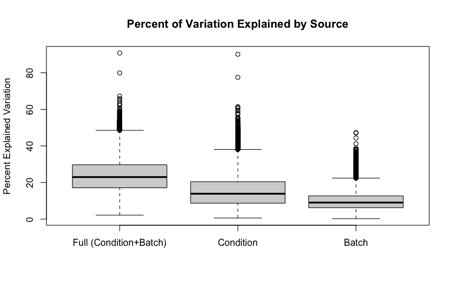
| Full (Condition+Batch) | Condition | Batch | |
|---|---|---|---|
| Min. | 2.161 | 0.58 | 0.267 |
| 1st Qu. | 17.13 | 8.709 | 6.251 |
| Median | 23 | 13.89 | 9.04 |
| Mean | 23.92 | 15.49 | 10.01 |
| 3rd Qu. | 29.69 | 20.48 | 12.72 |
| Max. | 90.79 | 90.12 | 47.32 |
| Min. | 1st Qu. | Median | Mean | 3rd Qu. | Max. | Ps<0.05 | |
|---|---|---|---|---|---|---|---|
| Batch P-values | 1.254e-07 | 0.2132 | 0.4547 | 0.4665 | 0.7127 | 1 | 0.06882 |
| Condition P-values | 0 | 0.02451 | 0.16 | 0.2777 | 0.4754 | 0.9999 | 0.3244 |
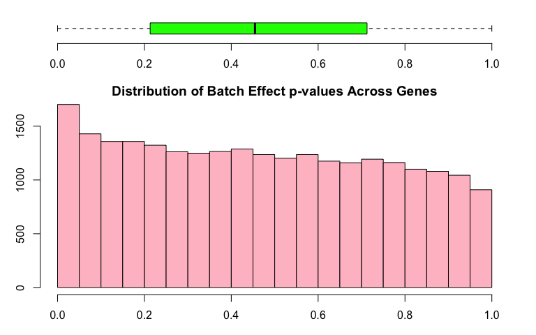
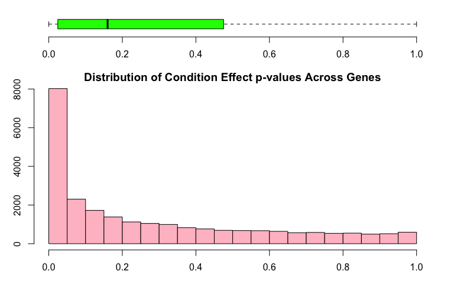
Boxplots for all values for each of the samples and are colored by batch membership.
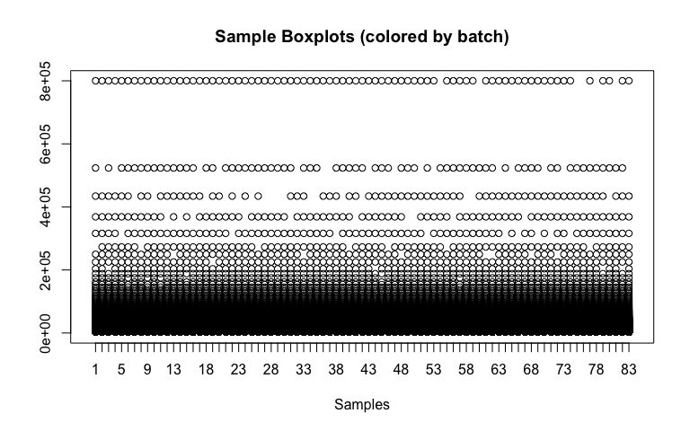
| Condition: NegativeNegativePositive (logFC) | Condition: NegativePositiveNegative (logFC) | Condition: NegativePositivePositive (logFC) | Condition: PositiveNegativeNegative (logFC) | |
|---|---|---|---|---|
| 19897 | -95.25 | -4.911 | 5.094 | -29.42 |
| 14974 | -14.08 | -26.54 | -25.37 | 8.411 |
| 7947 | 282462 | 13250 | 122352 | -28394 |
| 22630 | 411 | -293.6 | 612.8 | 1162 |
| 7949 | 7764 | 252 | 3695 | -506.8 |
| 3019 | 12.66 | 21.13 | 52.56 | 20.54 |
| 7948 | 27466 | 744 | 13838 | -369.7 |
| 10289 | 5125 | 23.36 | 4450 | -1706 |
| 6310 | 16060 | 663 | 15171 | -1334 |
| 3942 | -15481 | -12173 | -15167 | -10108 |
| Condition: PositiveNegativePositive (logFC) | Condition: PositivePositiveNegative (logFC) | Condition: PositivePositivePositive (logFC) | AveExpr | F | |
|---|---|---|---|---|---|
| 19897 | 7368 | -24.61 | -175 | 195.6 | 90.9 |
| 14974 | 663.4 | -30.65 | 8.288 | 29.88 | 36.77 |
| 7947 | 58795 | 15880 | 211215 | 55050 | 17.91 |
| 22630 | 218 | 711.9 | 5672 | 2088 | 15.74 |
| 7949 | 1346 | 297.1 | 6915 | 1890 | 15.59 |
| 3019 | 361 | 15.51 | -22.74 | 79.49 | 14.77 |
| 7948 | 4609 | 745.3 | 14440 | 5426 | 13.09 |
| 10289 | 1279 | 509.8 | 6003 | 1508 | 12.46 |
| 6310 | 3530 | 749.4 | 16232 | 5139 | 12.36 |
| 3942 | -16128 | -17532 | -19121 | 21087 | 11.42 |
| P.Value | adj.P.Val | |
|---|---|---|
| 19897 | 3.975e-32 | 9.83e-28 |
| 14974 | 8.481e-21 | 1.049e-16 |
| 7947 | 2.77e-13 | 2.284e-09 |
| 22630 | 4.005e-12 | 2.417e-08 |
| 7949 | 4.886e-12 | 2.417e-08 |
| 3019 | 1.423e-11 | 5.865e-08 |
| 7948 | 1.444e-10 | 5.103e-07 |
| 10289 | 3.534e-10 | 1.092e-06 |
| 6310 | 4.104e-10 | 1.128e-06 |
| 3942 | 1.662e-09 | 4.11e-06 |
This plot helps identify outlying samples. 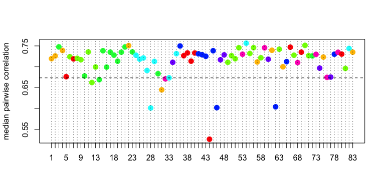
This is a heatmap of the given data matrix showing the batch effects and variations with different conditions. 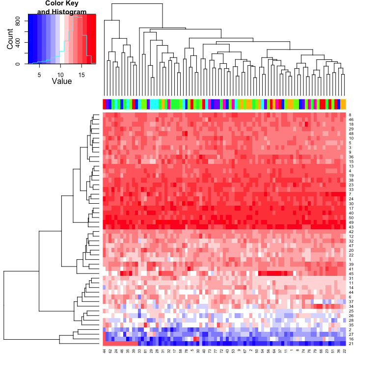
This is a heatmap of the correlation between samples. 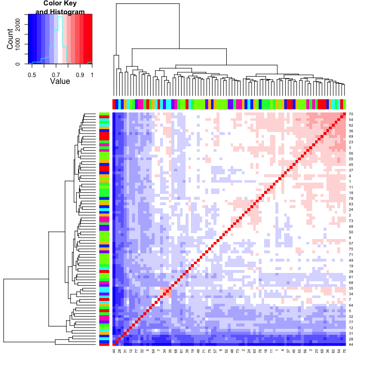
This is a Circular Dendrogram of the given data matrix colored by batch to show the batch effects. 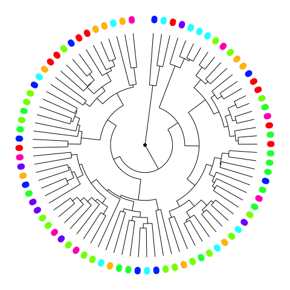
This is a plot of the top two principal components colored by batch to show the batch effects. 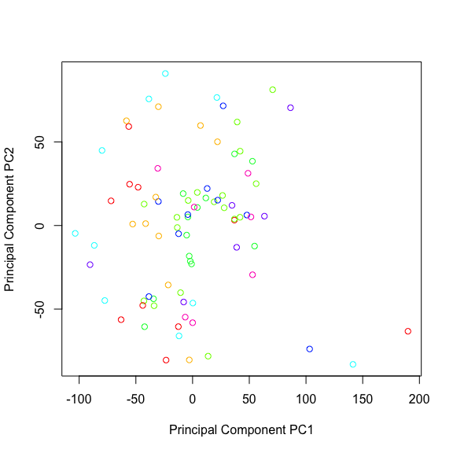
| Proportion of Variance (%) | Cumulative Proportion of Variance (%) | Percent Variation Explained by Either Condition or Batch | Percent Variation Explained by Condition | Condition Significance (p-value) | Percent Variation Explained by Batch | Batch Significance (p-value) | |
|---|---|---|---|---|---|---|---|
| PC1 | 10.02 | 10.02 | 31.5 | 25.8 | 0.01294 | 11.8 | 0.5911 |
| PC2 | 7.581 | 17.6 | 44.5 | 38.5 | 0 | 4.4 | 0.4093 |
| PC3 | 5.89 | 23.49 | 46.8 | 41.6 | 3e-05 | 14.9 | 0.4655 |
| PC4 | 5.402 | 28.89 | 37.4 | 26.6 | 0.00847 | 18.1 | 0.1302 |
| PC5 | 3.416 | 32.31 | 41.4 | 36.2 | 0.00063 | 15.9 | 0.5331 |
| PC6 | 2.964 | 35.27 | 23.9 | 5 | 0.7626 | 19.3 | 0.02825 |
| PC7 | 2.722 | 37.99 | 17.8 | 5.4 | 0.5665 | 10.8 | 0.1956 |
| PC8 | 2.302 | 40.3 | 10.8 | 3.8 | 0.6901 | 4.6 | 0.6195 |
| PC9 | 2.149 | 42.44 | 17.9 | 6.8 | 0.4594 | 9.7 | 0.2602 |
| PC10 | 2.013 | 44.46 | 9.5 | 5.6 | 0.7794 | 4.2 | 0.8921 |
| PC11 | 1.801 | 46.26 | 26.7 | 7.4 | 0.3975 | 18.7 | 0.02098 |
| PC12 | 1.725 | 47.98 | 17 | 6.8 | 0.9093 | 13.7 | 0.3189 |
| PC13 | 1.712 | 49.69 | 13.4 | 3.8 | 0.8581 | 9.2 | 0.3896 |
| PC14 | 1.565 | 51.26 | 22.5 | 10.7 | 0.1398 | 9.5 | 0.1874 |
| PC15 | 1.504 | 52.76 | 12 | 3.7 | 0.8338 | 7.5 | 0.5036 |
| PC16 | 1.486 | 54.25 | 20.9 | 7 | 0.1833 | 8.7 | 0.1234 |
| PC17 | 1.396 | 55.65 | 14.3 | 3.7 | 0.9352 | 11.3 | 0.3163 |
| PC18 | 1.367 | 57.01 | 25.9 | 20.4 | 0.04053 | 8.8 | 0.6482 |
| PC19 | 1.296 | 58.31 | 15.9 | 12.1 | 0.1422 | 1.8 | 0.8731 |
| PC20 | 1.267 | 59.58 | 24.8 | 13.1 | 0.4097 | 16.7 | 0.1785 |
| PC21 | 1.205 | 60.78 | 24.9 | 16.6 | 0.07848 | 10 | 0.394 |
| PC22 | 1.187 | 61.97 | 13.2 | 5.9 | 0.6491 | 6.7 | 0.5777 |
| PC23 | 1.163 | 63.13 | 19 | 7.3 | 0.3235 | 9.1 | 0.2165 |
| PC24 | 1.137 | 64.27 | 20.4 | 15.1 | 0.0983 | 5.5 | 0.7239 |
| PC25 | 1.113 | 65.38 | 17.4 | 8.1 | 0.4862 | 9.5 | 0.3763 |
| PC26 | 1.082 | 66.46 | 13.9 | 5.5 | 0.721 | 8.2 | 0.4808 |
| PC27 | 1.042 | 67.5 | 18.9 | 8 | 0.6667 | 13 | 0.2579 |
| PC28 | 1.01 | 68.51 | 17.1 | 4.4 | 0.6977 | 11.4 | 0.187 |
| PC29 | 0.9962 | 69.51 | 14.6 | 7.3 | 0.3972 | 5.3 | 0.5657 |
| PC30 | 0.9657 | 70.48 | 16.6 | 8.7 | 0.2886 | 5.8 | 0.4964 |
| PC31 | 0.9484 | 71.42 | 16.2 | 10.3 | 0.2519 | 4.8 | 0.6854 |
| PC32 | 0.9373 | 72.36 | 9.6 | 4.7 | 0.9297 | 6.3 | 0.8152 |
| PC33 | 0.93 | 73.29 | 9.9 | 2.9 | 0.9022 | 6.2 | 0.626 |
| PC34 | 0.8958 | 74.19 | 17 | 12.8 | 0.2059 | 4.7 | 0.8387 |
| PC35 | 0.8775 | 75.06 | 24 | 10.5 | 0.3032 | 14.5 | 0.1183 |
| PC36 | 0.8711 | 75.94 | 21.6 | 16.1 | 0.05627 | 4.7 | 0.6883 |
| PC37 | 0.8479 | 76.78 | 9 | 6.2 | 0.741 | 3.3 | 0.9497 |
| PC38 | 0.8263 | 77.61 | 9.5 | 3.5 | 0.8915 | 5.6 | 0.7182 |
| PC39 | 0.817 | 78.43 | 17.7 | 4.9 | 0.6735 | 11.7 | 0.1821 |
| PC40 | 0.8034 | 79.23 | 17 | 9.2 | 0.2234 | 5.2 | 0.4952 |
| PC41 | 0.8001 | 80.03 | 9.7 | 4.8 | 0.8176 | 4.8 | 0.8163 |
| PC42 | 0.7571 | 80.79 | 17.8 | 4.9 | 0.9532 | 15.3 | 0.1724 |
| PC43 | 0.7408 | 81.53 | 15.6 | 7.4 | 0.3544 | 5.8 | 0.4824 |
| PC44 | 0.7311 | 82.26 | 13.4 | 6.8 | 0.7358 | 7.8 | 0.6416 |
| PC45 | 0.7241 | 82.98 | 15.8 | 8.4 | 0.3669 | 6.2 | 0.5535 |
| PC46 | 0.7127 | 83.7 | 11.9 | 4.1 | 0.7843 | 6.8 | 0.5485 |
| PC47 | 0.6905 | 84.39 | 13.5 | 6.2 | 0.4983 | 5.3 | 0.5786 |
| PC48 | 0.6825 | 85.07 | 21.2 | 10.3 | 0.2026 | 9.4 | 0.2484 |
| PC49 | 0.6711 | 85.74 | 25 | 1.7 | 0.9905 | 23.7 | 0.00796 |
| PC50 | 0.651 | 86.39 | 12.9 | 3.9 | 0.8879 | 9.2 | 0.4332 |
| PC51 | 0.6361 | 87.03 | 11.5 | 5.7 | 0.9086 | 8.1 | 0.7235 |
| PC52 | 0.6095 | 87.64 | 26.3 | 10.5 | 0.1469 | 14.1 | 0.0559 |
| PC53 | 0.5943 | 88.23 | 12.4 | 5.3 | 0.5545 | 4.8 | 0.6008 |
| PC54 | 0.5697 | 88.8 | 19.9 | 11.3 | 0.4377 | 11.7 | 0.4082 |
| PC55 | 0.5661 | 89.37 | 14.4 | 9.1 | 0.4945 | 6.3 | 0.7566 |
| PC56 | 0.5476 | 89.91 | 13.9 | 6.8 | 0.8308 | 9.5 | 0.5828 |
| PC57 | 0.5412 | 90.46 | 11.4 | 4.6 | 0.8688 | 7.3 | 0.6364 |
| PC58 | 0.5351 | 90.99 | 12.7 | 6.3 | 0.5519 | 5 | 0.6661 |
| PC59 | 0.5241 | 91.52 | 12 | 3.9 | 0.9026 | 8.4 | 0.5164 |
| PC60 | 0.5047 | 92.02 | 19.9 | 10.1 | 0.2289 | 8.5 | 0.3199 |
| PC61 | 0.4914 | 92.51 | 15.1 | 5.1 | 0.6154 | 8.4 | 0.3447 |
| PC62 | 0.4803 | 92.99 | 7.5 | 5.7 | 0.7436 | 1.6 | 0.9876 |
| PC63 | 0.468 | 93.46 | 13.1 | 7.1 | 0.645 | 6.6 | 0.6976 |
| PC64 | 0.4506 | 93.91 | 6 | 1.8 | 0.9845 | 4 | 0.8777 |
| PC65 | 0.4439 | 94.35 | 15.6 | 2.4 | 0.9318 | 12.6 | 0.1757 |
| PC66 | 0.4347 | 94.79 | 15.6 | 6.6 | 0.5089 | 7.7 | 0.414 |
| PC67 | 0.4223 | 95.21 | 9.1 | 4 | 0.8705 | 4.9 | 0.8003 |
| PC68 | 0.4156 | 95.63 | 16.5 | 8.6 | 0.4544 | 8.1 | 0.5007 |
| PC69 | 0.4113 | 96.04 | 11.9 | 2.1 | 0.9952 | 10.7 | 0.3867 |
| PC70 | 0.3826 | 96.42 | 7.1 | 3.5 | 0.8788 | 3 | 0.9141 |
| PC71 | 0.3612 | 96.78 | 11.5 | 3.2 | 0.9313 | 8.4 | 0.5056 |
| PC72 | 0.3495 | 97.13 | 25.5 | 13.7 | 0.07369 | 10.5 | 0.1683 |
| PC73 | 0.339 | 97.47 | 18.1 | 6.4 | 0.4262 | 9.5 | 0.2238 |
| PC74 | 0.3315 | 97.8 | 12.6 | 1.4 | 0.9698 | 10.3 | 0.2949 |
| PC75 | 0.3252 | 98.13 | 10.4 | 6.2 | 0.7275 | 4.6 | 0.8647 |
| PC76 | 0.3081 | 98.44 | 22.3 | 15.4 | 0.04986 | 5.1 | 0.5484 |
| PC77 | 0.2899 | 98.73 | 10.6 | 5.9 | 0.5478 | 2.8 | 0.823 |
| PC78 | 0.2823 | 99.01 | 6.6 | 2.4 | 0.9434 | 3.6 | 0.8717 |
| PC79 | 0.2738 | 99.28 | 20.4 | 3.7 | 0.2453 | 9.4 | 0.06198 |
| PC80 | 0.2584 | 99.54 | 12.6 | 8.6 | 0.4672 | 3.9 | 0.8728 |
| PC81 | 0.242 | 99.78 | 8.4 | 0.6 | 0.9958 | 7.1 | 0.5711 |
| PC82 | 0.2183 | 100 | 10.4 | 1.4 | 0.9755 | 8.3 | 0.4514 |
| PC83 | 2.159e-29 | 100 | 17.8 | 15.2 | 0.1241 | 3.4 | 0.9507 |
This is a heatmap plot showing the variation of gene expression mean, variance, skewness and kurtosis between samples grouped by batch to see the batch effects variation 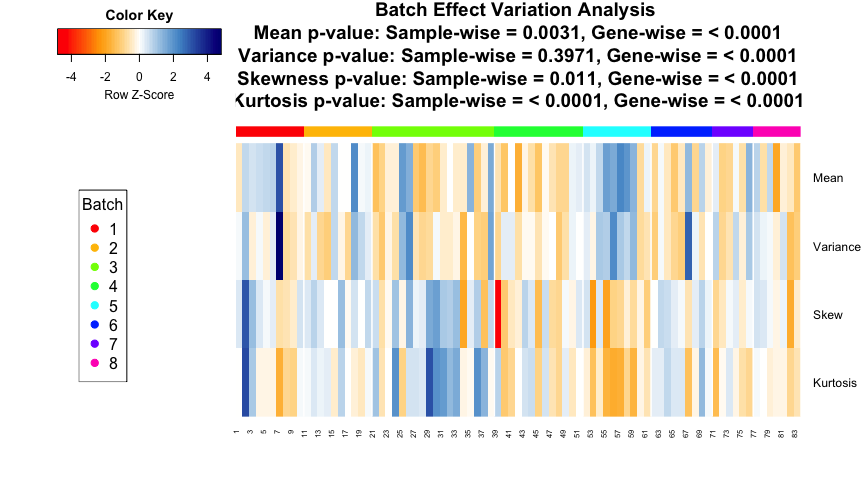
## Note: Sample-wise p-value is calculated for the variation across samples on the measure across genes. Gene-wise p-value is calculated for the variation of each gene between batches on the measure across each batch. If the data is quantum normalized, then the Sample-wise measure across genes is same for all samples and Gene-wise p-value is a good measure.This is a plot showing whether parametric or non-parameteric prior is appropriate for this data. It also shows the Kolmogorov-Smirnov test comparing the parametric and non-parameteric prior distribution.
## Found 8 batches
## Adjusting for 7 covariate(s) or covariate level(s)
## Standardizing Data across genes
## Fitting L/S model and finding priors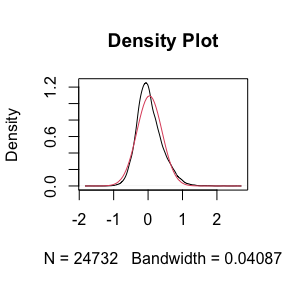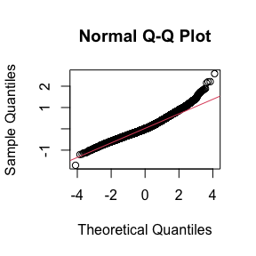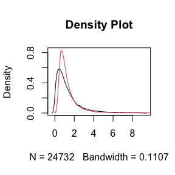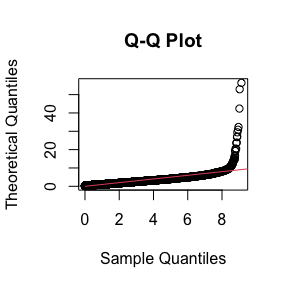
## Batch mean distribution across genes: Normal vs Empirical distribution
## Two-sided Kolmogorov-Smirnov test
## Selected Batch: 1
## Statistic D = 0.05502
## p-value = 0
##
##
## Batch Variance distribution across genes: Inverse Gamma vs Empirical distribution
## Two-sided Kolmogorov-Smirnov test
## Selected Batch: 1
## Statistic D = 0.1755
## p-value = 0Note: The non-parametric version of ComBat takes much longer time to run and we recommend it only when the shape of the non-parametric curve widely differs such as a bimodal or highly skewed distribution. Otherwise, the difference in batch adjustment is very negligible and parametric version is recommended even if p-value of KS test above is significant.## Number of Surrogate Variables found in the given data: 2